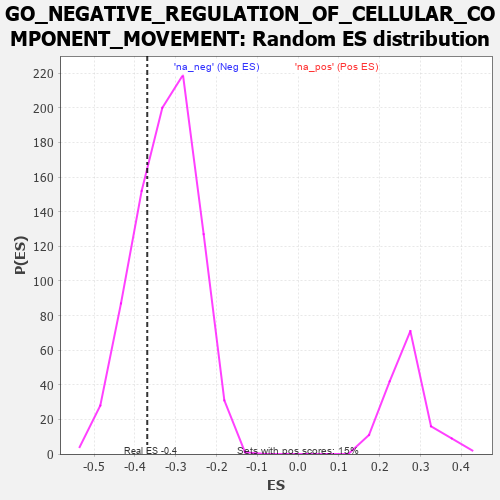

| | | Dataset | 7d |
| Phenotype | NoPhenotypeAvailable |
| Upregulated in class | na_neg |
| GeneSet | GO_NEGATIVE_REGULATION_OF_CELLULAR_COMPONENT_MOVEMENT |
| Enrichment Score (ES) | -0.36994013 |
| Normalized Enrichment Score (NES) | -1.1394911 |
| Nominal p-value | 0.27561837 |
| FDR q-value | 0.7102655 |
| FWER p-Value | 1.0 |
Table: GSEA Results Summary
 Fig 1: Enrichment plot: GO_NEGATIVE_REGULATION_OF_CELLULAR_COMPONENT_MOVEMENT
Fig 1: Enrichment plot: GO_NEGATIVE_REGULATION_OF_CELLULAR_COMPONENT_MOVEMENT
Profile of the Running ES Score & Positions of GeneSet Members on the Rank Ordered List
| PROBE | GENE SYMBOL | GENE_TITLE | RANK IN GENE LIST | RANK METRIC SCORE | RUNNING ES | CORE ENRICHMENT | | 1 | LRP1 | | | 470 | 0.648 | -0.0353 | No |
| 2 | SRF | | | 542 | 0.615 | -0.0214 | No |
| 3 | APEX1 | | | 577 | 0.604 | -0.0033 | No |
| 4 | VASH1 | | | 712 | 0.556 | 0.0004 | No |
| 5 | HDAC5 | | | 900 | 0.506 | -0.0044 | No |
| 6 | AKT1 | | | 1040 | 0.476 | -0.0043 | No |
| 7 | MEF2C | | | 1054 | 0.473 | 0.0117 | No |
| 8 | DACH1 | | | 1471 | 0.395 | -0.0262 | No |
| 9 | PTPRT | | | 1578 | 0.378 | -0.0256 | No |
| 10 | STRAP | | | 1793 | 0.339 | -0.0400 | No |
| 11 | ABR | | | 1812 | 0.335 | -0.0298 | No |
| 12 | MIF | | | 2357 | 0.252 | -0.0892 | No |
| 13 | MITF | | | 2659 | 0.205 | -0.1197 | No |
| 14 | ARID2 | | | 2664 | 0.204 | -0.1126 | No |
| 15 | HAS1 | | | 2722 | 0.195 | -0.1126 | No |
| 16 | SLIT2 | | | 2724 | 0.195 | -0.1054 | No |
| 17 | WNT4 | | | 3023 | 0.146 | -0.1377 | No |
| 18 | SMAD7 | | | 3369 | 0.093 | -0.1778 | No |
| 19 | PTPRK | | | 3454 | 0.084 | -0.1853 | No |
| 20 | PIN1 | | | 3543 | 0.069 | -0.1939 | No |
| 21 | GPR18 | | | 3578 | 0.063 | -0.1959 | No |
| 22 | NF1 | | | 3713 | 0.040 | -0.2113 | No |
| 23 | NRG3 | | | 3925 | 0.005 | -0.2378 | No |
| 24 | SCAI | | | 3983 | -0.005 | -0.2448 | No |
| 25 | ACTN1 | | | 4050 | -0.016 | -0.2526 | No |
| 26 | SFRP2 | | | 4065 | -0.018 | -0.2537 | No |
| 27 | CRK | | | 4139 | -0.031 | -0.2618 | No |
| 28 | TIMP1 | | | 4209 | -0.043 | -0.2689 | No |
| 29 | WNT11 | | | 4282 | -0.056 | -0.2759 | No |
| 30 | FRMD5 | | | 4455 | -0.085 | -0.2945 | No |
| 31 | ILK | | | 4510 | -0.096 | -0.2977 | No |
| 32 | NISCH | | | 4568 | -0.109 | -0.3009 | No |
| 33 | ADTRP | | | 4612 | -0.120 | -0.3018 | No |
| 34 | GATA3 | | | 4614 | -0.120 | -0.2975 | No |
| 35 | DLG5 | | | 4619 | -0.121 | -0.2935 | No |
| 36 | FBLN1 | | | 4748 | -0.149 | -0.3041 | No |
| 37 | KLF4 | | | 5005 | -0.198 | -0.3291 | No |
| 38 | RAP2C | | | 5073 | -0.218 | -0.3295 | No |
| 39 | DRD2 | | | 5088 | -0.221 | -0.3230 | No |
| 40 | FLCN | | | 5140 | -0.235 | -0.3208 | No |
| 41 | KRIT1 | | | 5248 | -0.257 | -0.3247 | No |
| 42 | PTEN | | | 5262 | -0.261 | -0.3167 | No |
| 43 | MAGI2 | | | 5295 | -0.269 | -0.3107 | No |
| 44 | CD9 | | | 5319 | -0.277 | -0.3033 | No |
| 45 | EPHA1 | | | 5349 | -0.285 | -0.2964 | No |
| 46 | ADA | | | 5798 | -0.405 | -0.3380 | No |
| 47 | EVL | | | 6052 | -0.490 | -0.3517 | Yes |
| 48 | JAG1 | | | 6060 | -0.494 | -0.3343 | Yes |
| 49 | CALR | | | 6077 | -0.499 | -0.3177 | Yes |
| 50 | TPM1 | | | 6226 | -0.545 | -0.3162 | Yes |
| 51 | RGN | | | 6233 | -0.547 | -0.2966 | Yes |
| 52 | DPP4 | | | 6501 | -0.663 | -0.3057 | Yes |
| 53 | KANK1 | | | 6536 | -0.678 | -0.2847 | Yes |
| 54 | STK24 | | | 6550 | -0.684 | -0.2610 | Yes |
| 55 | MIIP | | | 6554 | -0.686 | -0.2358 | Yes |
| 56 | ROBO1 | | | 6577 | -0.699 | -0.2126 | Yes |
| 57 | RNF41 | | | 6588 | -0.703 | -0.1877 | Yes |
| 58 | CERS2 | | | 6689 | -0.756 | -0.1723 | Yes |
| 59 | RYK | | | 7102 | -1.000 | -0.1872 | Yes |
| 60 | PTPRJ | | | 7180 | -1.054 | -0.1577 | Yes |
| 61 | WDR63 | | | 7411 | -1.276 | -0.1393 | Yes |
| 62 | TCAF1 | | | 7901 | -2.803 | -0.0969 | Yes |
| 63 | PLCB1 | | | 7904 | -2.841 | 0.0085 | Yes |
Table: GSEA details [plain text format]

Fig 2: GO_NEGATIVE_REGULATION_OF_CELLULAR_COMPONENT_MOVEMENT: Random ES distribution
Gene set null distribution of ES for GO_NEGATIVE_REGULATION_OF_CELLULAR_COMPONENT_MOVEMENT